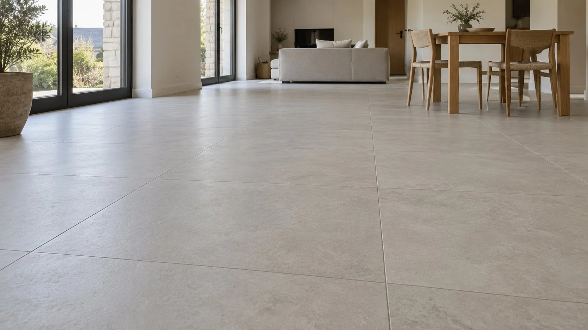

Carrelage intérieur
Pose de carrelage au sol pour les pièces de vie, la cuisine et les circulations, dans le neuf ou en rénovation.
Pascal Quéro · Châtelaudren-Plouagat
Demander un devis
Sols intérieurs
Séjour, cuisine, entrée ou couloir : précisez les pièces à carreler et la surface approximative dans votre demande.
Rénovation
Indiquez le revêtement en place et joignez, si possible, des photos du sol. La préparation du support et la pose se définissent selon l’état du chantier.
Construction neuve
Si vous avez les plans, indiquez les surfaces et le calendrier prévu. Mentionnez aussi le format de carrelage envisagé et la présence d’un chauffage au sol.
Avant de me contacter
Peut-on poser sur un ancien carrelage ?
Cela ne se décide pas à partir de la seule surface. Précisez le revêtement en place, son état et les éventuelles fissures pour que le support puisse être examiné.
Quelles informations donner pour un devis ?
La commune, les pièces concernées, la surface estimée, le revêtement actuel et le délai souhaité. Signalez si les carreaux sont déjà choisis ou achetés.
Votre chantier
Indiquez la commune, la surface et les travaux prévus. Vous pouvez aussi utiliser les liens de contact pour discuter directement du projet avec Pascal.